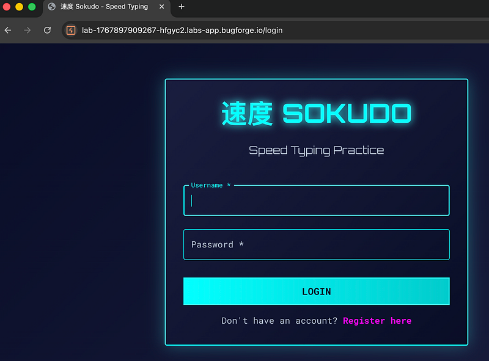
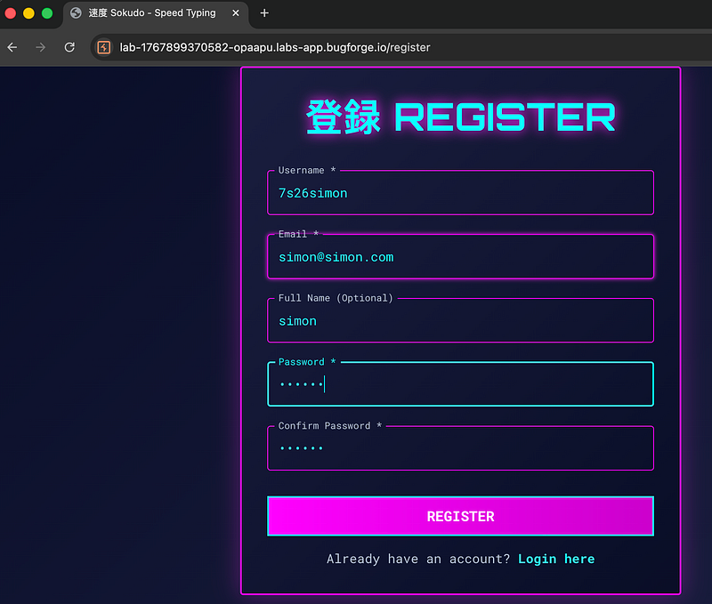
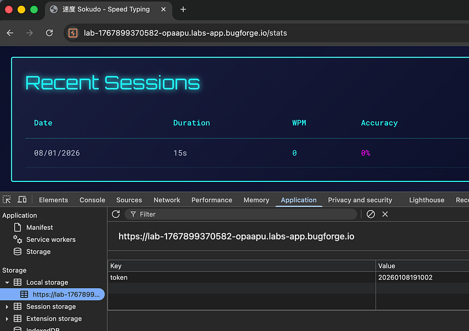
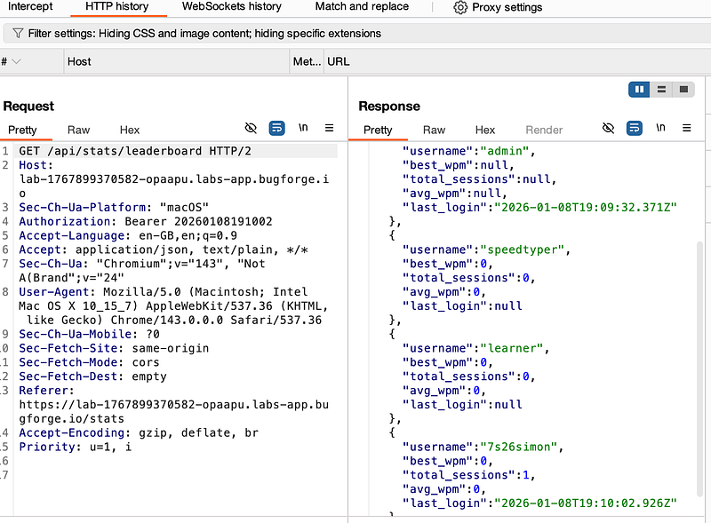
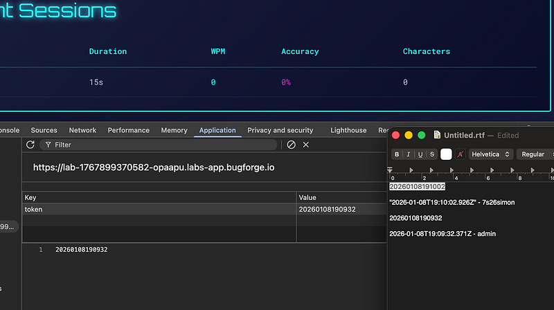
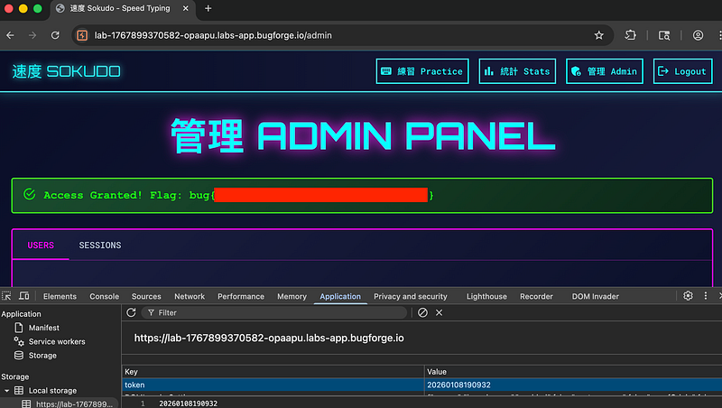

OSCP · OSWP · PWPP · PWPA · PAPA · EnCE · Linux+ · LPIC-1 · Network+ · Security+ · Pentest+ · eJPT · eWPT · BSc · PGCert
Sokudo writeup
Step 1: Create an account
I was greeted with a login page. There wasn’t much else to do here aside from log in or register. I registered a new account.

Step 2: Registration
I opened an account (but not before trying some basic attempts at trying to register as the admin of the app, to no avail). I was greeted with a Speed Typing Practice app after registering.

Step 3: Test your speed typing!

I played the 15 second game and got on the leaderboard (somehow, despite my terrible performance). But are we going to become admin? If so, how? I checked my cookies in the browser, but didn’t see anything listed, so I checked my local storage and found a token. The token looked like a date in the format YYYY. So I continued looking around.
Step 4: Putting the dots (well, numbers) together
Whilst on the leaderboard, my HTTP History tab in burpsuite was showing something interesting in the response to the API call. speedtyper, learner didn’t have a last_login value.
admin and I did. But what’s more interesting, is that the last_login value looked very much like my token in the previous screenshot:

Step 5: Typing out my cookie in the YYYYMMDDHHMMSS format
I broke open a text editor and manually copied out the values from burpsuite and began typing out my last_login time in the format year, month, day, hour, minute, second (YYYYMMDDHHMMSS) and copied it to my clipboard.

Step 6: Replaying the token
I replaced my 7s26simon token with the last_login value of the admin and refreshed the page. I was now the admin of the application! (although being admin doesn’t make you type faster, as I found out).

Final thoughts? Another enjoyable challenge from Bugforge! I’ll probably try one of their more difficult labs soon.
Thanks for reading!